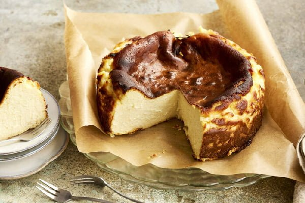

مواد لازم:
- تخم مرغ ۴ عدد
- پنیر ماسکارپونه ۶۰۰ گرم
- خامه صبحانه ۴۰۰ گرم
- شکر ۱ پیمانه
- نشاسته ذرت ۲ قاشق غذاخوری
- وانیل نوک قاشق چایخوری
طرز تهیه:
مرحله اول
برای تهیه کیک سن سباستین خوشمزه در ابتدای کار فر را با حرارت ۱۸۰ درجه سانتی گراد روشن می کنیم تا کاملا گرم شود. در ادامه پنیر ماسکارپونه را درون یک کاسه مناسب می ریزیم و به مدت ۵ دقیقه با همزن برقی هم می زنیم.
مرحله دوم
زمانی که پنیر ماسکارپونه یکدست شد، خامه صبحانه را به کاسه اضافه کرده، سپس مجددا هم می زنیم تا با هم ترکیب و ادغام شوند. در ادامه تخم مرغ ها را دانه دانه به کاسه اضافه کرده و هر تخم مرغ را حدود ۳۰ ثانیه هم می زنیم.
مرحله سوم
در ادامه با تخم مرغ آخر وانیل را اضافه می کنیم، سپس به خوبی هم زده و بین کار کاسه را دورگیری می کنیم تا تخم مرغ ها به صورت کامل مخلوط شوند. حالا شکر را به کاسه اضافه کرده و مجددا به مدت ۳ دقیقه هم می زنیم.
مرحله چهارم
زمانی که ذرات شکر کاملا درون مایه کیک حل شد، نشاسته ذرت را درون الک می ریزیم، سپس درون کاسه الک کرده و با لیسک هم می زنیم تا بافت مایه کیک یکدست شود. در ادامه درون یک قالب مناسب را با کاغذ روغنی می پوشانیم.
مرحله پنجم
حالا مایه کیک را درون قالب می ریزیم، سپس ۱ سیخ چوبی درون مایه کیک می چرخانیم تا حباب های اضافی بین مایه کیک از بین برود. در ادامه قالب را طبقه وسط فر قرار می دهیم تا کیک به مدت ۴۵ کاملا پخته شود.
مرحله ششم
پس از گذشت این زمان در صورت نیاز گریل را روشن کرده، سپس اجازه می دهیم کیک به مدت ۳ تا ۵ دقیقه گریل شود تا روی آن طلایی و خوشرنگ شود. زمانی که روی کیک طلایی شد، فر را خاموش کرده و درب آن را نیمه باز قرار می دهیم.
در ادامه اجازه می دهیم کیک درون فر بماند تا کاملا سرد شود. زمانی که کیک کاملا سرد شد، آن را از فر خارج می کنیم و به مدت ۷ تا ۸ درون یخچال قرار می دهیم، سپس خارج کرده و با شکلات آب شده تزیین می کنیم. نوش جان.
